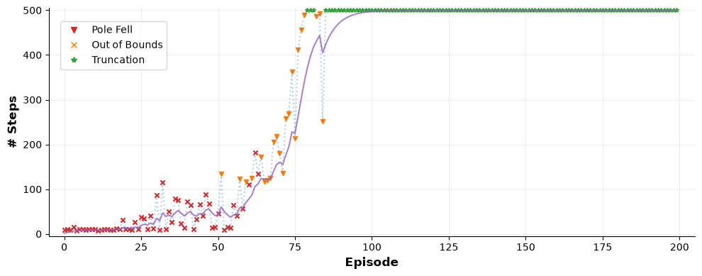
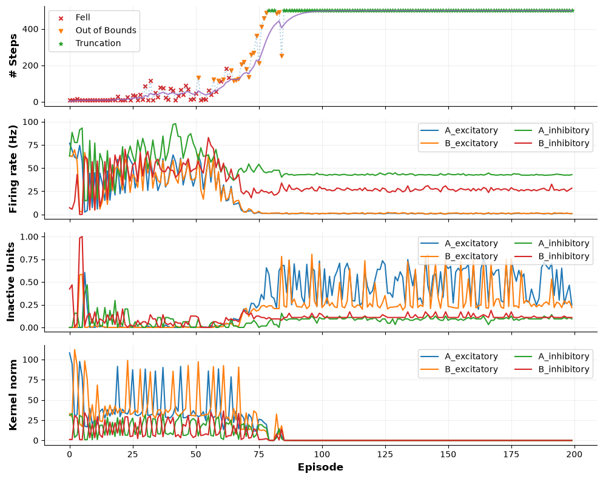
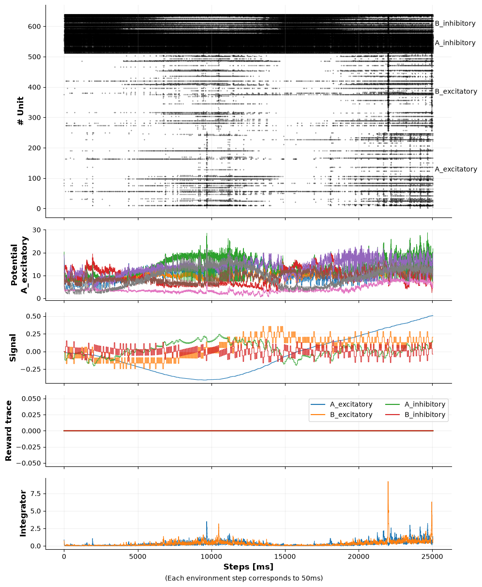
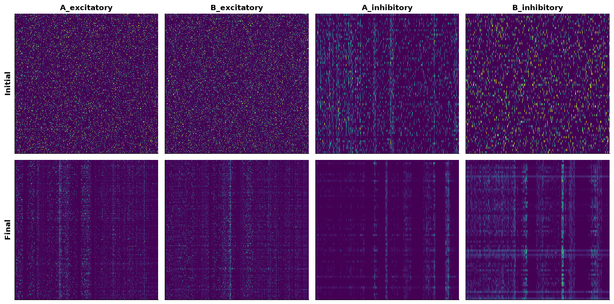

Tutorial #7: Recording#
Back in Tutorial #4 we observed a brain by reading its state after every single step (and we promised ourselves not to do that too often, since GPU-CPU communication is expensive). Then, in Tutorial #6, we trained a brain to balance the CartPole™ and we only looked at how many steps the pole stayed up.
However, Spark models learn continuously, and the interesting (and possibily important) questions are rarely about the final score. Ideally, we would like to start asking more complex questions: How often does each population fire? How do the membrane potentials move? How much are the weights changing? What was the network is seeing?
Spark tries to answers such questions via the module spark.recording. This module can be used to record (almost) anything from any model while it runs relatively efficiently and without having to pay any cost whatsoever when we do not care about the current state of the cat.
So, let’s run the CartPole™ once more, but this time let’s record it!
# Imports
import tqdm
import numpy as np
import jax
import jax.numpy as jnp
import spark
import spark.recording as rec
As usual, we start by registering classes and building the brain.
NEURON_PATH = './alif_mod_neuron.scfg'
BRAIN_PATH = './ab_brain.scfg'
# Register the custom models
try:
spark.register_neuron_from_config_file('ALIFModNeuron', NEURON_PATH)
except Exception as e:
print(f'Oh no: {e}!')
# Load, reseed and build the brain
brain_config = spark.nn.BrainConfig.from_file(BRAIN_PATH).with_new_seeds(seed=42)
brain = spark.nn.Brain(config=brain_config)
# Build the brain
f16 = lambda v: spark.FloatArray(jnp.asarray(v, dtype=jnp.float16))
example_inputs = {
'signal': f16(np.zeros(4)),
**{name: f16([0.0]) for name in ('mod_a_ex', 'mod_a_in', 'mod_b_ex', 'mod_b_in')},
**{name: f16([0.0]) for name in ('drift_ex', 'drift_in')},
}
_ = brain(**example_inputs)
Next, as some chemist used to said: ”Give me a target and I’ll give you the drug.”, In order to record anything, we first need to know what we want to record.
In Spark this comes from the very same names used to wire the model. Here, we can either start guessing paths and names or we can simply ask the model using spark.recording.get_probe_targets.
entries = rec.get_probe_targets(brain, example_inputs)
for entry in entries:
print(entry)
__call__:drift_ex port (1,) float16 FloatArray Brain
__call__:drift_in port (1,) float16 FloatArray Brain
__call__:mod_a_ex port (1,) float16 FloatArray Brain
__call__:mod_a_in port (1,) float16 FloatArray Brain
__call__:mod_b_ex port (1,) float16 FloatArray Brain
__call__:mod_b_in port (1,) float16 FloatArray Brain
__call__:signal port (4,) float16 FloatArray Brain
A_excitatory.__call__:drift port (1,) float16 FloatArray ALIFModNeuron
A_excitatory.__call__:modulation port (1,) float16 FloatArray ALIFModNeuron
A_excitatory.__call__:in_spikes port (832,) bool SpikeArray ALIFModNeuron
A_excitatory.delays:out_spikes port (256, 832) bool SpikeArray N2NDelays
A_excitatory.drift_trace:output port (1,) float16 FloatArray SignalAverage
A_excitatory.synapses:currents port (256,) float16 CurrentArray TracedSynapses
A_excitatory.reward_trace:output port (1,) float16 FloatArray SignalAccumulator
A_excitatory.soma:spikes port (256,) bool SpikeArray AdaptiveLeakySoma
A_excitatory.plasticity:kernel port (256, 832) float16 FloatArray ModulatedQuadrupletRule
A_excitatory:out_spikes port (256,) bool SpikeArray ALIFModNeuron
B_excitatory.__call__:drift port (1,) float16 FloatArray ALIFModNeuron
B_excitatory.__call__:modulation port (1,) float16 FloatArray ALIFModNeuron
B_excitatory.__call__:in_spikes port (832,) bool SpikeArray ALIFModNeuron
B_excitatory.delays:out_spikes port (256, 832) bool SpikeArray N2NDelays
B_excitatory.drift_trace:output port (1,) float16 FloatArray SignalAverage
B_excitatory.synapses:currents port (256,) float16 CurrentArray TracedSynapses
B_excitatory.reward_trace:output port (1,) float16 FloatArray SignalAccumulator
B_excitatory.soma:spikes port (256,) bool SpikeArray AdaptiveLeakySoma
B_excitatory.plasticity:kernel port (256, 832) float16 FloatArray ModulatedQuadrupletRule
B_excitatory:out_spikes port (256,) bool SpikeArray ALIFModNeuron
A_inhibitory.__call__:drift port (1,) float16 FloatArray ALIFModNeuron
A_inhibitory.__call__:modulation port (1,) float16 FloatArray ALIFModNeuron
A_inhibitory.__call__:in_spikes port (768,) bool SpikeArray ALIFModNeuron
A_inhibitory.delays:out_spikes port (64, 768) bool SpikeArray N2NDelays
A_inhibitory.drift_trace:output port (1,) float16 FloatArray SignalAverage
A_inhibitory.synapses:currents port (64,) float16 CurrentArray TracedSynapses
A_inhibitory.reward_trace:output port (1,) float16 FloatArray SignalAccumulator
A_inhibitory.soma:spikes port (64,) bool SpikeArray AdaptiveLeakySoma
A_inhibitory.plasticity:kernel port (64, 768) float16 FloatArray ModulatedQuadrupletRule
A_inhibitory:out_spikes port (64,) bool SpikeArray ALIFModNeuron
B_inhibitory.__call__:drift port (1,) float16 FloatArray ALIFModNeuron
B_inhibitory.__call__:modulation port (1,) float16 FloatArray ALIFModNeuron
B_inhibitory.__call__:in_spikes port (768,) bool SpikeArray ALIFModNeuron
B_inhibitory.delays:out_spikes port (64, 768) bool SpikeArray N2NDelays
B_inhibitory.drift_trace:output port (1,) float16 FloatArray SignalAverage
B_inhibitory.synapses:currents port (64,) float16 CurrentArray TracedSynapses
B_inhibitory.reward_trace:output port (1,) float16 FloatArray SignalAccumulator
B_inhibitory.soma:spikes port (64,) bool SpikeArray AdaptiveLeakySoma
B_inhibitory.plasticity:kernel port (64, 768) float16 FloatArray ModulatedQuadrupletRule
B_inhibitory:out_spikes port (64,) bool SpikeArray ALIFModNeuron
spiker:spikes port (4, 128) bool SpikeArray TopologicalLinearSpiker
integrator:signal port (2,) float16 FloatArray ExponentialIntegrator
A_excitatory.inhibition_mask attribute (256,) bool BooleanMask ALIFModNeuron
A_excitatory.delays.kernel attribute (256, 832) uint8 IntegerArray N2NDelays
A_excitatory.drift_trace.trace.trace attribute (1,) float16 Variable Tracer
A_excitatory.plasticity.post_trace.trace attribute (256, 832) float16 Variable Tracer
A_excitatory.plasticity.pre_trace.trace attribute (256, 832) float16 Variable Tracer
A_excitatory.reward_trace.trace.trace attribute (1,) float16 Variable Tracer
A_excitatory.soma.potential attribute (256,) float16 PotentialArray AdaptiveLeakySoma
A_excitatory.soma.spike_counter attribute (256,) int32 Variable AdaptiveLeakySoma
A_excitatory.soma.threshold_trace.trace attribute (256,) float16 Variable Tracer
A_excitatory.synapses.kernel attribute (256, 832) float16 FloatArray TracedSynapses
A_excitatory.synapses.current_tracer.trace attribute (256, 1) float16 Variable Tracer
A_inhibitory.inhibition_mask attribute (64,) bool BooleanMask ALIFModNeuron
A_inhibitory.delays.kernel attribute (64, 768) uint8 IntegerArray N2NDelays
A_inhibitory.drift_trace.trace.trace attribute (1,) float16 Variable Tracer
A_inhibitory.plasticity.post_trace.trace attribute (64, 768) float16 Variable Tracer
A_inhibitory.plasticity.pre_trace.trace attribute (64, 768) float16 Variable Tracer
A_inhibitory.reward_trace.trace.trace attribute (1,) float16 Variable Tracer
A_inhibitory.soma.potential attribute (64,) float16 PotentialArray AdaptiveLeakySoma
A_inhibitory.soma.spike_counter attribute (64,) int32 Variable AdaptiveLeakySoma
A_inhibitory.soma.threshold_trace.trace attribute (64,) float16 Variable Tracer
A_inhibitory.synapses.kernel attribute (64, 768) float16 FloatArray TracedSynapses
A_inhibitory.synapses.current_tracer.trace attribute (64, 1) float16 Variable Tracer
B_excitatory.inhibition_mask attribute (256,) bool BooleanMask ALIFModNeuron
B_excitatory.delays.kernel attribute (256, 832) uint8 IntegerArray N2NDelays
B_excitatory.drift_trace.trace.trace attribute (1,) float16 Variable Tracer
B_excitatory.plasticity.post_trace.trace attribute (256, 832) float16 Variable Tracer
B_excitatory.plasticity.pre_trace.trace attribute (256, 832) float16 Variable Tracer
B_excitatory.reward_trace.trace.trace attribute (1,) float16 Variable Tracer
B_excitatory.soma.potential attribute (256,) float16 PotentialArray AdaptiveLeakySoma
B_excitatory.soma.spike_counter attribute (256,) int32 Variable AdaptiveLeakySoma
B_excitatory.soma.threshold_trace.trace attribute (256,) float16 Variable Tracer
B_excitatory.synapses.kernel attribute (256, 832) float16 FloatArray TracedSynapses
B_excitatory.synapses.current_tracer.trace attribute (256, 1) float16 Variable Tracer
B_inhibitory.inhibition_mask attribute (64,) bool BooleanMask ALIFModNeuron
B_inhibitory.delays.kernel attribute (64, 768) uint8 IntegerArray N2NDelays
B_inhibitory.drift_trace.trace.trace attribute (1,) float16 Variable Tracer
B_inhibitory.plasticity.post_trace.trace attribute (64, 768) float16 Variable Tracer
B_inhibitory.plasticity.pre_trace.trace attribute (64, 768) float16 Variable Tracer
B_inhibitory.reward_trace.trace.trace attribute (1,) float16 Variable Tracer
B_inhibitory.soma.potential attribute (64,) float16 PotentialArray AdaptiveLeakySoma
B_inhibitory.soma.spike_counter attribute (64,) int32 Variable AdaptiveLeakySoma
B_inhibitory.soma.threshold_trace.trace attribute (64,) float16 Variable Tracer
B_inhibitory.synapses.kernel attribute (64, 768) float16 FloatArray TracedSynapses
B_inhibitory.synapses.current_tracer.trace attribute (64, 1) float16 Variable Tracer
integrator.trace.tracer_decay.trace attribute (2,) float16 Variable Tracer
integrator.trace.tracer_rise.trace attribute (2,) float16 Variable Tracer
spiker.potential attribute (4, 128) float32 Variable TopologicalLinearSpiker
Now, that with a name at hand we can star revealing its true nature. However, revelations are expensive and we may have to settle with just probing a variable with a spark.recording.Probe. Probes are straightforward to use, although they came in different “flavours”, depending on what we want to record.
probe |
records |
|---|---|
SummaryProbe |
mean, std, min, max, active_fraction (fraction of nonzero values), active_fraction_per_unit, inactive_unit_fraction or hist over the chunk |
TraceProbe |
the value on every step, optionally for a subset of units and with a stride |
RasterProbe |
the nonzero entries on every step, packed as bits (perfect for spikes) |
SnapshotProbe |
an attribute at the end of the chunk |
DeltaProbe |
the change of an attribute over the chunk: full, norm or mean_abs |
probe = rec.SummaryProbe( # <--- Use the probe to record summary statistics
'A_excitatory.soma:spikes', # <--- Target: The spikes of the soma of A_excitatory
reduce=(
rec.SummaryReduction.ACTIVE_FRACTION, # <--- Compute the firing rate.
rec.SummaryReduction.INACTIVE_UNIT_FRACTION,
),
)
Since, some experiments can be really expensive, we can validate the probes against the model, to avoid any future pain after a long run that lasted for several days but recorded anything (do not look at me, it could happen to anybody!).
# A good probe...
try:
rec.validate(brain, (probe,))
print(f'Oh yes: {type(probe).__name__} of {probe.address}!')
except Exception as e:
print(f'Oh no: {e}!')
# ... and a bad one.
try:
bad_probe = rec.SummaryProbe('A_excitatory.stoma:spikes')
rec.validate(brain, (bad_probe,))
print(f'Oh yes: {type(bad_probe).__name__} of {bad_probe.address}!')
except Exception as e:
print(f'Oh no: {e}!')
Oh yes: SummaryProbe of A_excitatory.soma:spikes!
Oh no: No module "stoma" under A_excitatory for "A_excitatory.stoma:spikes". Available: drift_trace, reward_trace, delays, plasticity, soma, synapses.!
Writing probes by hand, for every population within the model, can get old fast. Rather than building every probe manually, Spark offers spark.recording.presets, which proposes a reasonable set of probes from the model definition:
summary Cheap summary statistics of the population (spikes, potentials, kernel sizes)
activity General model activity (most inputs/ and outputs plust potentials)
weights for tracking the synpatic kernels.
Note that these presets are mostly for debugging purposes and we still recommend hand-tailored probes for any real experiment.
for rec_preset in rec.presets.default(brain):
print(f'{rec_preset.name:<9}')
for probe in rec_preset.probes[:4]:
print(f' {type(probe).__name__:<14} {probe.address}')
print(f' ... {len(rec_preset.probes)} probes\n')
summary
SummaryProbe A_excitatory.soma:spikes
SummaryProbe A_excitatory.soma.potential
SummaryProbe B_excitatory.soma:spikes
SummaryProbe B_excitatory.soma.potential
... 12 probes
activity
TraceProbe __call__:drift_ex
TraceProbe __call__:mod_a_ex
TraceProbe __call__:mod_b_ex
TraceProbe __call__:drift_in
... 25 probes
weights
SnapshotProbe A_excitatory.synapses.kernel
SnapshotProbe B_excitatory.synapses.kernel
SnapshotProbe A_inhibitory.synapses.kernel
SnapshotProbe B_inhibitory.synapses.kernel
... 4 probes
Although spark.recording makes recording straightforward, it still can slow down if we try to record everything, everywhere, all at once. Not to mention that we will drown in data before the model even had a chance to learn. As such, there is still a need to be conservative when recording data.
A spark.recording.Measurements puts a few probes together under a single name, or measurement. As any recorder, it should be trigger to start recording by means of recorder.record(name, num_steps), which tracks the name measurements for the next num_steps steps. We still need to decide what to record: every 20 episodes, a few steps after something interesting happens, when the reward goes up/down, etc.
Summaries, snapshots and deltas turn many steps into a single record, so the measurements holding them also need a group: the steps each record covers. A number of steps, group=100, gives one record every 100 steps of the run; the name of a tag, group=’episode’, gives one record per episode, however long each one was. Once a step of a group is recorded, the group is recorded until its end, so a record covers its whole group (unless it was recorded from halfway through one, or the run ended first; each record keeps the number of steps it covers anyway). This also means that asking for a single step as an episode starts, recorder.record(‘per_episode’), records the whole episode. Traces and rasters record every single step, so they need no group.
# Create a summary probe to track the firing rate and the fraction on dead neurons.
spikes = rec.SummaryProbe(
'A_excitatory.soma:spikes',
reduce=(rec.SummaryReduction.ACTIVE_FRACTION, rec.SummaryReduction.INACTIVE_UNIT_FRACTION),
)
# Recorded only when we ask for it, one summary every 100 steps...
by_hand = rec.Measurements('by_hand', (spikes,), group=100)
Additionally, the measurement can be schedule on regular patterns by means of a trigger. Under the hood, triggers count simulation steps, rec.Every(1000, length=100) records 100 steps out of every 1000 steps. Moreover, we can also provide a counting tag, such as episodes: rec.Every(20, unit=’episode’), which records one episode out of every 20. rec.Always(), as it names suggest, sets the recorder to be always ON.
# Record 100 steps out of every 1000 steps.
regular_measurement = rec.Measurements('regular', (spikes,), group=100, trigger=rec.Every(1000, length=100))
# ... or one episode out of every 20, one summary per episode.
episode_measurement = rec.Measurements('episode', (spikes,), group='episode', trigger=rec.Every(20, tag='episode'))
# ... or everything in collections of 100 steps.
drowning_measurement = rec.Measurements('drowning', (spikes,), group=100, trigger=rec.Always())
Note that certain probes require us to specify the group parameters in order to perform (compute) the measurement.
# Summaries need a group.
try:
rec.Measurements('oops', (spikes,))
except ValueError as e:
print(f'Oh no: {e}!')
# ... while traces and rasters do not.
potentials = rec.Measurements(
'potentials',
(rec.TraceProbe('A_excitatory.soma.potential', units=range(8), stride=5),), # <--- 8 neurons, every 5 steps
)
print(f'Oh yes: {potentials.name}!')
Oh no: Measurements "oops": A_excitatory.soma:spikes@summary give one record per group of steps; give "group", a number of steps or the name of a tag.!
Oh yes: potentials!
Note that the presets come with predefined triggers. However, for the sake of performance and the health of your storage device, we recommend to always construct the probes manually.
# The presets come with triggers and groups of their own, for runs that do not decide by hand.
for measurements in rec.presets.default(brain):
print(f'{measurements.name:<9} {measurements.trigger}, group {measurements.group}')
summary Always(tag=None), group 1000
activity Every(tag=None, n=100000, length=1000, offset=0), group None
weights Every(tag=None, n=100000, length=1, offset=99999), group 100000
Now, let’s run the CartPole experiment again, but this time let’s record everything from the training loop:
summary, the population statistics of the preset, for every episode, one summary each.
episode, every step of one episode out of 20: the spikes of every population, the potentials of 32 neurons per soma, the inputs, the reward and drift traces that drive plasticity, and the output of the integrator.
weights, a snapshot of every kernel at the end of those same episodes.
Note that we by setting group=’episode’ we are asking the recorder to keep track of the entire episode, since its episode counter will increase after the episode is completed.
Some data never reaches the model at all, for example the observation of the environment before we scale it. We can still record it as raw: the recorder keeps a frame only while measurements that declare it are being recorded, and quietly drops it otherwise, so we can call it on every single environment step without a second thought.
# Summary metrics of the entire network
summary = rec.Measurements(
'summary',
rec.presets.summary(brain), # <--- Rates, potentials and weight changes of every population
group='episode', # <--- One summary per episode
)
# Activity metrics of the entire episode
episode = rec.Measurements(
'episode',
rec.presets.activity(brain, trace_units=32), # <--- Spikes, 32 potentials per soma, inputs, traces
group='episode', # <--- Records the whole episode because rec.presets.activity returns TraceProbe
raw=('env/observation',),
views={'env/observation': {
'kind': 'vector',
'labels': ['position', 'velocity', 'angle', 'angular velocity']
}},
)
# Snapshots of the kernels after the end of the episode
weights = rec.Measurements(
'weights',
rec.presets.weights(brain),
group='episode',
)
measurements = [summary, episode, weights]
Now, for the training loop we are going to reuse the code from Tutorial #6 as it is, with two new names: spark.jit where Tutorial #6 used jax.jit, and spark.scan where it used jax.lax.scan. But first, the shared code.
# Cartpole metaparameters (same as Tutorial #6)
PASSIVE_MODULATION_SCALE = -0.0001
REWARD_FALL_SCALE = -25
REWARD_OOB_SCALE = -25
REWARD_OOB_THRESHOLD = 0.05
NEG_REWARD_SCALE = -0.1
MOD_INHIBITION_SCALE= 0.25
DT = 1
TRAIN_EPOCHES = 200
UNROLL = 1
STEPS = int(50/DT)
SEED = 42
# Utility function to preprocess information from the environment.
# This function just scale the observation environment to the (-1,1) range.
def process_obs(x):
# CartPos, CartSpeed, PoleAngle, PoleAngSpeed
x = x / np.array([2.4, 2.5, 0.2095, 3.5])
return np.clip(x, a_min=-1, a_max=1)
# Utility method to simplify model ingestion.
def mod_inputs(signal, drift, mod_a=0.0, mod_b=0.0):
f16 = lambda v: spark.FloatArray(jnp.array([v], dtype=jnp.float16))
return {
'signal': spark.FloatArray(jnp.array(signal, dtype=jnp.float16)),
'mod_a_ex': f16(mod_a),
'mod_a_in': f16(mod_a * MOD_INHIBITION_SCALE),
'mod_b_ex': f16(mod_b),
'mod_b_in': f16(mod_b * MOD_INHIBITION_SCALE),
'drift_ex': f16(drift),
'drift_in': f16(drift * MOD_INHIBITION_SCALE),
}
def run_episode(env, graph, state, modulation_scale, steps, unroll):
# Reset environment
next_obs, _ = env.reset()
rec.raw('env/observation', next_obs)
next_obs = process_obs(next_obs)
# Loop until the episode ends, either from failing or truncation
terminated = False
truncated = False
episode_steps = 0
# Allow the network to prepare for the episode.
for _ in range(1):
_, state = run_model_unroll(
graph, state, steps=steps, unroll=unroll,
**mod_inputs(np.zeros_like(next_obs), drift=0.0)
)
# Start episode
while not (terminated or truncated):
# Model logic, let the network do what it wants to do.
out, state = run_model_unroll(
graph, state, steps=steps, unroll=unroll,
**mod_inputs(next_obs, drift=PASSIVE_MODULATION_SCALE * modulation_scale)
)
# Environment logic.
next_action = int(np.argmax(out['action'].value))
prev_episode = np.array(next_obs)
next_obs, _, terminated, truncated, _ = env.step(next_action)
rec.raw('env/observation', next_obs)
next_obs = process_obs(next_obs)
episode_steps += 1
# Steer the network to what we want with one extra step with the last episode and the reward
if not truncated:
# Check if the agent went out of bounds.
out_of_bounds = np.abs(next_obs[0]) >= 1
# Critic-like action update
# Going out of bounds conflicts with learning to balance the pole, adding a second condition
# to check for the the pole to be mostly vertical improves learning speed
if out_of_bounds and np.abs(next_obs[2]) < REWARD_OOB_THRESHOLD:
# If the cart went out of bounds, we need to move the cart towards the center
# Going out of bounds is not as bad as the pole falling, so we should not put to much
# punishment towards that action
steer_to_b = next_obs[0] < 0
reward = REWARD_OOB_SCALE * modulation_scale
else:
# If the pole fell, we need to move the cart towards the side it fell
steer_to_b = next_obs[2] > 0
reward = REWARD_FALL_SCALE * modulation_scale
mod_a = reward if steer_to_b else NEG_REWARD_SCALE * reward
mod_b = reward if not steer_to_b else NEG_REWARD_SCALE * reward
# The reward is delivered once. The accumulator inside the neuron carries it through the
# rest of the interaction window.
for _ in range(1):
_, state = run_model_unroll(
graph, state, steps=steps, unroll=unroll,
**mod_inputs(prev_episode, drift=0.0, mod_a=mod_a, mod_b=mod_b)
)
else:
out_of_bounds = False
if out_of_bounds:
outcome = 'out of bounds'
elif truncated:
outcome = 'truncated'
else:
outcome = 'fell'
return state, episode_steps, outcome
Without an open recorder, spark.jit and spark.scan are jax.jit and jax.lax.scan, and our function compiles to the very same program as in Tutorial #6.
While a recorder is open, every call of our function is also a call of the recorder. Before the call, the recorder decides what to record over its steps, and spark.scan records it along the way. After the call, the records are handed over to the recorder, without waiting for them to leave the GPU. Each combination of recorded measurements compiles once.
from functools import partial
@partial(spark.jit, static_argnames=['steps', 'unroll']) # <--- jax.jit in Tutorial #6
def run_model_unroll(graph, state, steps, unroll=15, **inputs):
# Reward "reaches" the network only once and then the trace carries it through
# the rest of the interaction window
reward_keys = ('mod_a_ex', 'mod_a_in', 'mod_b_ex', 'mod_b_in')
delivered_once = jnp.zeros((steps,), dtype=jnp.float32).at[0].set(1.0)
rewards = {
key: (
inputs[key].value.astype(jnp.float32)[None, :] * delivered_once[:, None]
).astype(jnp.float16) for key in reward_keys
}
held_inputs = {
key: value for key, value in inputs.items() if key not in reward_keys
}
def step_fn(model_state, reward_slice):
# Merge model
model = spark.merge(graph, model_state)
# Run model. Append the reward to inputs.
out = model(**held_inputs, **{key: spark.FloatArray(value) for key, value in reward_slice.items()})
# Get new state
_, new_state = spark.split((model))
return new_state, out
# Run the scan loop
final_state, stacked_outs = spark.scan(
step_fn,
state,
xs=rewards,
length=steps,
unroll=unroll
)
# Retrieve model output
final_out = jax.tree.map(lambda x: x[-1], stacked_outs)
return final_out, final_state
Time to train! The recorder creates a new run directory inside runs/ and writes everything needed to understand the run later: the configuration of the model (including the layout of the Graph Editor, thanks to source), our metaparameters, the git commit of the code and the environment it ran in.
The first call recording a new combination of measurements compiles it. Here, the first episode compiles the call recording all three, and the second episode the call recording the summary alone. Every later call reuses one of the two.
import gymnasium as gym
# Initialize the environment
env_name = 'CartPole-v1'
env = gym.make(env_name, sutton_barto_reward=True)
next_obs, _ = env.reset(seed=SEED)
next_obs = process_obs(next_obs)
# Load the brain configuration
brain_config = spark.nn.BrainConfig.from_file(BRAIN_PATH)
# Reseed
brain_config = brain_config.with_new_seeds(seed=SEED)
# Initialize the brain
brain = spark.nn.Brain(config=brain_config)
brain(
signal=spark.FloatArray(jnp.array(next_obs, dtype=jnp.float16)),
mod_a_ex=spark.FloatArray(jnp.array([0], dtype=jnp.float16)),
mod_a_in=spark.FloatArray(jnp.array([0], dtype=jnp.float16)),
mod_b_ex=spark.FloatArray(jnp.array([0], dtype=jnp.float16)),
mod_b_in=spark.FloatArray(jnp.array([0], dtype=jnp.float16)),
drift_ex=spark.FloatArray(jnp.array([0], dtype=jnp.float16)),
drift_in=spark.FloatArray(jnp.array([0], dtype=jnp.float16)),
)
# Split brain into the graph and the state
graph, state = spark.split((brain))
Now, for the finall change, we just need to update the custom training loop.
First, we update any recorder.tag. Currently our only custom tag is ”episode” tag, so the recorder.record
Next, we call >recorder.record, to schedule the measurements.
Finally, we flush the recorder with recorder.log and recorder.event.
# Experiment hyperparameters (parameters that are not part of the model definition)
# The recorder can also store specific parameters for the run, to make it more easy to fully track entire experiments.
hparams = {
'steps': STEPS,
'episodes': TRAIN_EPOCHES,
'passive_modulation_scale': PASSIVE_MODULATION_SCALE,
'reward_fall_scale': REWARD_FALL_SCALE,
'reward_oob_scale': REWARD_OOB_SCALE,
'seed': SEED,
}
with rec.Recorder('runs', brain_config, measurements, name='cartpole', hparams=hparams, source=BRAIN_PATH) as recorder:
# Split brain into the graph and the state
graph, state = spark.split((brain))
# Some classic metrics
ema_alpha, train_steps_ema = 0.8, []
current_train_ema_steps = 0
# A classic training loop.
for e in (pbar := tqdm.tqdm(range(TRAIN_EPOCHES), mininterval=2)):
recorder.tag(episode=e) # <--- A new episode, and a new group of every measurements
recorder.record('summary') # <--- One summary of every episode
if e % 20 == 0:
recorder.record('episode') # <--- Every step of this episode...
recorder.record('weights') # <--- ...and the weights at its end
# We scale the passive modulation in order to prevent a bad episode from drastically updating the network
modulation_scale = (1 - (current_train_ema_steps / 500))**(0.5)
state, episode_steps, outcome = run_episode(env, graph, state, modulation_scale, steps=STEPS, unroll=UNROLL)
# Update the classic metrics
current_train_ema_steps = train_steps_ema[-1] if len(train_steps_ema) > 0 else 0
train_steps_ema.append(ema_alpha * current_train_ema_steps + (1-ema_alpha) * episode_steps)
recorder.log({'episode/steps': episode_steps, 'episode/steps_ema': train_steps_ema[-1], 'episode/modulation_scale': modulation_scale}, tag='episode')
recorder.event('episode_end', episode=e, steps=episode_steps, outcome=outcome)
pbar.set_description(f'Train Steps EMA: {train_steps_ema[-1]:.2f}')
Train Steps EMA: 500.00: 100%|██████████| 200/200 [05:49<00:00, 1.75s/it]
To finalize a recording it is enough to close the leave the with block. Note that whatever recorder-related operation that is still buffered gets finalized and the run is marked as finished.
Additionally, if an exception escapes the with block, the run is marked as failed or if the process dies without properly exiting the block, the run is left reported as crashed. Note that we can reopen the recorder using rec.Recorder.resume.
Now, let’s read inspect the recording of the experiment with spark.recording.load.
# The output path of the recorder can be accessed with "recorder.path"
run_recording = rec.load(recorder.path)
# Print run's metadata.
print(run_recording,'\n')
# Print run's hyperparameters.
print('hparams:', run_recording.hparams,'\n')
# Print run's probes info
for window in run_recording.windows()[:6]:
print(f'{window.measurements:<8} window {window.number}: steps {window.t0} to {window.t1}, {window.spans} calls, {window.groups} groups')
Run("20261001-133907_cartpole_4b9b2ba3", finished, step 3339950, measurements ['summary', 'episode', 'weights'])
hparams: {'steps': 50, 'episodes': 200, 'passive_modulation_scale': -0.0001, 'reward_fall_scale': -25, 'reward_oob_scale': -25, 'seed': 42}
episode window 0: steps 0 to 372350, 712 calls, 0 groups
episode window 1: steps 834950 to 1361000, 1002 calls, 0 groups
episode window 2: steps 1836950 to 2363000, 1002 calls, 0 groups
episode window 3: steps 2838950 to 2864000, 501 calls, 0 groups
summary window 0: steps 0 to 548800, 10976 calls, 88 groups
summary window 1: steps 534350 to 1109050, 11205 calls, 22 groups
As with the CartPole example, let’s first visualize the learning as a function of the episodes and the number of steps. In order to retrieve the data from the recorder, we need to use the scalar method with the name of the variable of interest.
import matplotlib as mpl
import matplotlib.pyplot as plt
from matplotlib.lines import Line2D
mpl.rcParams['axes.spines.right'] = False
mpl.rcParams['axes.spines.top'] = False
# Process data
# Extract the episode steps and ema from the recording.
_, train_steps = run_recording.scalar('episode/steps')
_, train_steps_ema = run_recording.scalar('episode/steps_ema')
TRAIN_EPOCHES = len(train_steps)
# Split the outcomes of the run into fell/oob/truncated
outcomes = [event['outcome'] for event in run_recording.events('episode_end')]
outcomes_array = np.array(outcomes)
x_pole = np.argwhere(outcomes_array == 'fell').reshape(-1)
y_pole = train_steps[x_pole]
x_oob = np.argwhere(outcomes_array == 'out of bounds').reshape(-1)
y_oob = train_steps[x_oob]
x_trnc = np.argwhere(outcomes_array == 'truncated').reshape(-1)
y_trnc = train_steps[x_trnc]
s = np.arange(TRAIN_EPOCHES)
ts = np.array(train_steps)
fig = plt.figure(figsize=(10,4))
# General curve
plt.plot(s, train_steps, alpha=1/3, linestyle=':')
plt.plot(s, train_steps_ema, color='tab:purple', alpha=0.8)
# Pole-fell
plt.scatter(x_pole, y_pole, color='tab:red', s=20, alpha=1, marker='x')
# Agent out-of-bounds
plt.scatter(x_oob, y_oob, color='tab:orange', s=20, alpha=1, marker='v')
# Episode truncated
plt.scatter(x_trnc, y_trnc, color='tab:green', s=20, alpha=1, marker='*')
# Format plot
plt.xlim(-5, TRAIN_EPOCHES+5)
plt.ylim(-5, 505)
plt.xlabel('Episode', fontweight='bold', fontsize=12)
plt.ylabel('# Steps', fontweight='bold', fontsize=12)
plt.grid(alpha=0.2)
plt.tight_layout()
legend_elements = [
Line2D([], [], color='tab:red', marker='v', linewidth=0, label='Pole Fell'),
Line2D([], [], color='tab:orange', marker='x', linewidth=0, label='Out of Bounds'),
Line2D([], [], color='tab:green', marker='*', linewidth=0, label='Truncation'),
]
fig.legend(handles=legend_elements, ncols=1, bbox_to_anchor=(0.165, 0.825), loc='center', frameon=True)
plt.show()

A 1 to 1 correspondance with the original cartpole example!.
However, this plot alone will not justify paying the extra compute time. Fortunately, the current probes can give us much much more information about what is going on in the model itself. Currently, we are tracking firing rates, rasters, potentials and many more. Let’s see what is really in there.
_, steps = run_recording.scalar('episode/steps')
_, ema = run_recording.scalar('episode/steps_ema')
outcomes = [event['outcome'] for event in run_recording.events('episode_end')]
fig, axs = plt.subplots(4, 1, figsize=(10, 8), sharex=True)
# Training curve
axs[0].plot(s, train_steps, alpha=1/3, linestyle=':')
axs[0].plot(s, train_steps_ema, color='tab:purple', alpha=0.8)
axs[0].scatter(x_pole, y_pole, color='tab:red', s=20, alpha=1, marker='x', label='Fell')
axs[0].scatter(x_oob, y_oob, color='tab:orange', s=20, alpha=1, marker='v', label='Out of Bounds')
axs[0].scatter(x_trnc, y_trnc, color='tab:green', s=20, alpha=1, marker='*', label='Truncation')
axs[0].set_ylabel('# Steps', fontweight='bold', fontsize=12)
axs[0].legend(loc='upper left')
# Episode firing rate.
for name in ('A_excitatory', 'B_excitatory', 'A_inhibitory', 'B_inhibitory'):
_, rate = run_recording.scalar(f'summary/{name}.soma:spikes/active_fraction')
axs[1].plot(rate * 1000, label=name) # <--- rate per step to Hz (dt = 1 ms)
axs[1].set_ylabel('Firing rate (Hz)', fontweight='bold', fontsize=12)
axs[1].legend(loc='upper right', ncols=2)
# Episode inactive units.
for name in ('A_excitatory', 'B_excitatory', 'A_inhibitory', 'B_inhibitory'):
_, inactive = run_recording.scalar(f'summary/{name}.soma:spikes/inactive_unit_fraction')
axs[2].plot(inactive, label=name) # <--- rate per step to Hz (dt = 1 ms)
axs[2].set_ylabel('Inactive Units', fontweight='bold', fontsize=12)
axs[2].legend(loc='upper right', ncols=2) # <--- rate per step to Hz
# Episode kernel norms.
for name in ('A_excitatory', 'B_excitatory', 'A_inhibitory', 'B_inhibitory'):
_, norm = run_recording.scalar(f'summary/{name}.synapses.kernel/norm')
axs[3].plot(norm, label=name) # <--- rate per step to Hz (dt = 1 ms)
axs[3].set_ylabel('Kernel norm', fontweight='bold', fontsize=12)
axs[3].set_xlabel('Episode', fontweight='bold', fontsize=12)
axs[3].legend(loc='upper right', ncols=2) # <--- rate per step to Hz
for ax in axs:
ax.grid(alpha=0.2)
plt.tight_layout()
plt.show()

Moreover, our recorder was also tracking entire episodes which we can inspect in more detail!
# Get the episode records.
episodes = run_recording.read('episode')
# ... and let's just focus on the last episode.
episode = episodes[max(episodes)]
fig, axs = plt.subplots(5, 1, figsize=(10, 12), sharex=True, height_ratios=[3, 1, 1, 1, 1])
# Spikes of every population, from their rasters: one bool per unit and step.
offset = 0
for name in ('A_excitatory', 'B_excitatory', 'A_inhibitory', 'B_inhibitory'):
# Rasters are bundle in a row format (step, spikes)
t, spikes = episode.rasters[f'{name}.soma:spikes']
units = spikes.shape[1]
step, unit = np.nonzero(spikes)
axs[0].scatter(t[step], unit + offset, s=0.1, color='black')
axs[0].text(t[-1], offset + units / 2, f' {name}', va='center')
offset += units
axs[0].set_ylabel('# Unit', fontweight='bold', fontsize=12)
# A few membrane potentials.
t, potential = episode.traces['A_excitatory.soma.potential']
axs[1].plot(t, potential[:, :8], lw=0.7)
axs[1].set_ylabel('Potential\nA_excitatory', fontweight='bold', fontsize=12)
# What the network was seeing.
t, signal = episode.traces['__call__:signal']
axs[2].plot(t, signal, lw=0.8)
axs[2].set_ylabel('Signal', fontweight='bold', fontsize=12)
# The reward traces that drive plasticity.
for name in ('A_excitatory', 'B_excitatory', 'A_inhibitory', 'B_inhibitory'):
t, reward = episode.traces[f'{name}.reward_trace:output']
axs[3].plot(t, reward, label=name)
axs[3].set_ylabel('Reward trace', fontweight='bold', fontsize=12)
axs[3].legend(loc='upper right', ncols=2)
# And what it decided.
t, action = episode.traces['integrator:signal']
axs[4].plot(t, action, lw=0.8)
axs[4].set_ylabel('Integrator', fontweight='bold', fontsize=12)
axs[4].set_xlabel(f'Steps [ms]', fontweight='bold', fontsize=12)
fig.text(0.5, 0, '(Each environment step corresponds to 50ms)', va='center', ha='center')
for ax in axs:
ax.grid(alpha=0.2)
plt.tight_layout()
plt.show()

We also have some snapshots of the kernels at the end of each (recorded) episode. Unlike any other measurement so far, these ones are really large, so we measure this ones sparsely, otherwise the recorder would bottleneck everything (and it is already taking its fair share of the pie!).
weights = run_recording.read('weights')
first = weights[0]
last = weights[max(weights)]
fig, ax = plt.subplots(2, 4, figsize=(14, 7))
# Initial kernel
for i, name in enumerate(('A_excitatory', 'B_excitatory', 'A_inhibitory', 'B_inhibitory')):
ax[0, i].imshow(first.snapshots[f'{name}.synapses.kernel'], aspect='auto', interpolation='none')
ax[0, i].set_title(name, fontweight='bold', fontsize=12)
# Final kernel
for i, name in enumerate(('A_excitatory', 'B_excitatory', 'A_inhibitory', 'B_inhibitory')):
ax[1, i].imshow(last.snapshots[f'{name}.synapses.kernel'], aspect='auto', interpolation='none')
# Extra format
for r in ax:
for p in r:
p.set_xticks([])
p.set_yticks([])
ax[0, 0].set_ylabel('Initial', fontweight='bold', fontsize=12)
ax[1, 0].set_ylabel('Final', fontweight='bold', fontsize=12)
plt.tight_layout()
plt.show()

Plots are nice, but we spent the whole series building our models as graphs, so why not look at a run the same way? spark.RunViewer opens a run over the graph of its model:
Every node in the graph shows can show any tracked variable: summaries over the whole run, traces, rasters, histograms and weights. Importantly information is organized in a with a clean timeline, which shows what was recorded at each point in time for each node.
It also works while the run is still being written! The viewer can follow the run live. Moreover, the Record button can ask the recorder to record something right now, similar to run.record(name, steps) does from code; the request reaches the training loop through the run directory, so it works from another process too. The same viewer can be accessed through the Graph Editor, under File > Open Run….
# Feel free to explore the run!
#if __name__ == "__main__":
# viewer = spark.RunViewer()
# viewer.open(recorder.path)
A few more tricks for long runs:
rec.When(condition, watch=…) records a set of measurements when a condition is triggered, for example, when most of a population goes inactive. Importantly, since this condition is checked once the records reaches the host, it start recording after the condtion was triggered, which depending on the workload may be the next model call or a several model calls later. Fortunately, lookback can mitigate this effect by keeping track a few extra steps, which for the sake of efficiency are only kept in the GPU until they are actually needed.
inactive = lambda record: record.summaries['A_excitatory.soma:spikes'].inactive_unit_fraction > 0.9
collapse = rec.Measurements(
'collapse',
rec.presets.activity(brain, trace_units=32),
trigger=rec.When(inactive, watch='summary', length=500),
lookback=500,
)
In general lookback is perfect to see what led to an event! (… not only to fix the features)
For example, it is quite easy to create a probe that keeps track of what happens just before the pole falls.
# Set an activity measurement of the last 200 steps.
before_fall = rec.Measurements(
'before_fall',
rec.presets.activity(brain, trace_units=32),
lookback=200,
)
# Written only after the pole falls.
with rec.Recorder('runs', brain_config, [*measurements, before_fall], name='lookback') as recorder:
graph, state = spark.split((brain))
for e in range(5):
recorder.tag(episode=e)
state, episode_steps, outcome = run_episode(env, graph, state, modulation_scale=1.0, steps=STEPS, unroll=UNROLL)
if outcome == 'fell':
recorder.record('before_fall') # <--- The next call, and the 200 steps before it
falls = rec.load(recorder.path).read('before_fall')
falls[max(falls)]
Record 2100: steps 2100 to 2350 of the run (250 steps)
traces
A_excitatory.drift_trace:output (250, 1) float16
A_excitatory.reward_trace:output (250, 1) float16
A_excitatory.soma.potential (250, 32) float16
A_inhibitory.drift_trace:output (250, 1) float16
A_inhibitory.reward_trace:output (250, 1) float16
A_inhibitory.soma.potential (250, 32) float16
B_excitatory.drift_trace:output (250, 1) float16
B_excitatory.reward_trace:output (250, 1) float16
B_excitatory.soma.potential (250, 32) float16
B_inhibitory.drift_trace:output (250, 1) float16
B_inhibitory.reward_trace:output (250, 1) float16
B_inhibitory.soma.potential (250, 32) float16
__call__:drift_ex (250, 1) float16
__call__:drift_in (250, 1) float16
__call__:mod_a_ex (250, 1) float16
__call__:mod_a_in (250, 1) float16
__call__:mod_b_ex (250, 1) float16
__call__:mod_b_in (250, 1) float16
__call__:signal (250, 4) float16
integrator:signal (250, 2) float16
rasters
A_excitatory.soma:spikes (250, 256) bool
A_inhibitory.soma:spikes (250, 64) bool
B_excitatory.soma:spikes (250, 256) bool
B_inhibitory.soma:spikes (250, 64) bool
spiker:spikes (250, 512) bool
recorder.checkpoint(state) saves the state of the model into the run, and run.restore(model) brings it back, so a run can be resumed with rec.Recorder.resume.
# Save the state of the model into the run...
with rec.Recorder('runs', brain_config, measurements, name='checkpoint') as recorder:
graph, state = spark.split((brain))
for e in range(3):
recorder.tag(episode=e)
recorder.record('summary')
state, episode_steps, outcome = run_episode(env, graph, state, modulation_scale=1.0, steps=STEPS, unroll=UNROLL)
recorder.checkpoint(spark.merge(graph, state)) # <--- brain.checkpoint, filed under the current step
# ... and later on, maybe after a crash, bring it back and go on from there.
run_checkpoint = rec.load(recorder.path)
step = run_checkpoint.checkpoints()[-1]
restored = run_checkpoint.restore(step) # <--- The brain, built again from the checkpoint
with rec.Recorder.resume(recorder.path, restored, step=step) as recorder: # <--- The run goes on from the step of the checkpoint
graph, state = spark.split((restored))
for e in range(3, 6):
recorder.tag(episode=e)
recorder.record('summary')
state, episode_steps, outcome = run_episode(env, graph, state, modulation_scale=1.0, steps=STEPS, unroll=UNROLL)
When a pattern is regular, a trigger can do the asking for us: rec.Measurements(…, trigger=rec.Every(20, unit=’episode’)) replaces the if of our training loop. Triggers and recorder.record can be combined freely.
# The measurements of our training loop, asking for their own steps...
triggered = [
rec.Measurements('summary', rec.presets.summary(brain), group='episode', trigger=rec.Always()),
rec.Measurements('episode', rec.presets.activity(brain, trace_units=32), group='episode', raw=('env/observation',), trigger=rec.Every(20, tag='episode')),
rec.Measurements('weights', rec.presets.weights(brain), group='episode', trigger=rec.Every(20, tag='episode')),
]
# ... and a training loop without a single if.
with rec.Recorder('runs', brain_config, triggered, name='triggers') as recorder:
graph, state = spark.split((brain))
for e in range(3):
recorder.tag(episode=e) # <--- The triggers count the episodes of this tag
state, episode_steps, outcome = run_episode(env, graph, state, modulation_scale=1.0, steps=STEPS, unroll=UNROLL)
PROTIP: Each combination of recorded measurements compiles the first time it is recorded. warmup compiles ahead of time the combinations that are likely to be recorded, so that no compilation happens mid-run:
with rec.Recorder('runs', brain_config, measurements) as recorder:
run_model_unroll.warmup(graph, state, steps=STEPS, unroll=UNROLL, **mod_inputs(np.zeros(4), drift=0.0))
A few things worth keeping in mind:
Each distinct combination of recorded measurements is compiled once. Try to keep measurements multiples of each other to minimize the number of compilations. For example, having 3 different measurements every A, B and C times may either compile to {A}, {A, B} and {A, B, C} if B is a multiple of A and C is a multiple of A and B; similarly, if all three are independent, this could potentially produce 6 different compilations: {A}, {B}, {C}, {A, B}, {B, C} and {A, B, C}.
Summaries, traces of a few neurons and rasters are cheap. Snapshots of large weight matrices are limited by the transfer out of the GPU, so record them rarely.
Records are copied to the host and written on a separate thread, so the model never waits for them.
🎉 Congratulations! 🎉
Now you can watch your SNNs learn, not just count how long the pole stays up!